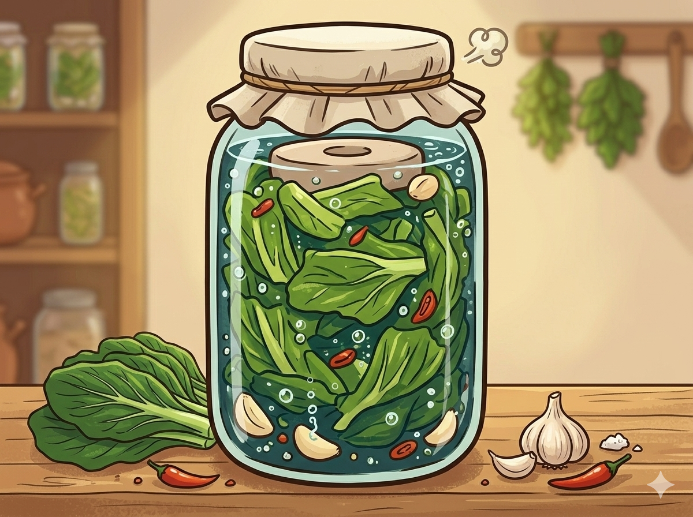

Bioteknologi adalah cabang ilmu biologi yang mempelajari pemanfaatan makhluk hidup maupun produk dari makhluk hidup untuk menghasilkan barang ataupun jasa. Bioteknologi yang dimanfaatkan dalam pembuatan sayur asam adalah bioteknologi konvensional.
Bioteknologi konvensional adalah bioteknologi yang memanfaatkan organisme secara langsung untuk menghasilkan produk barang dan jasa yang bermanfaat bagi manusia melalui proses fermentasi.
Fermentasi adalah proses penguraian metabolik senyawa organik oleh mikroorganisme, melalui hasil aktivitas enzim yang menghasilkan energi dalam sel dengan kondisi anaerobik dan dengan pembebasan gas, yang menyebabkan perubahan biokimia organik melalui aksi enzim.
Sayur asam adalah sayuran fermentasi tradisional yang berasal dari Tiongkok, dibuat dari kubis atau sawi pahit. Cara pembuatan tradisional dari sayur asam diolah terlebih dahulu dan ditumpuk dengan garam ke dalam toples, kemudian difermentasi selama satu bulan pada suhu ruangan. Sayur asam dibuat melalui fermentasi bakteri asam laktat. Sawi pada pembuatan sayur asin difermentasi secara alami dengan air pekat yang diambil dari air cucian beras, garam meja dan gula merah iris serta biasanya ditambah jahe.